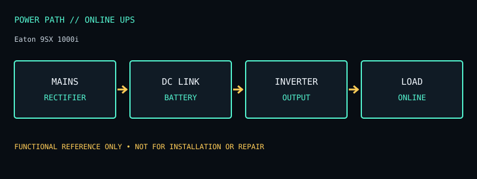

[ ONLINE UPS // IDENTIFIED MODEL ]
Eaton 9SX 1000i
230 V online double-conversion UPS, 1000 VA / 900 W, eight IEC C13 outlets. This record documents the named model only; check the unit nameplate and its matching manufacturer documentation before service or installation.

ARCHIVAL IDENTIFICATION: Preserve the complete SKU, suffix, region, date code, manual revision, installed battery part number and observed condition. Similar model names do not prove identical hardware.
Model specifications & service record
| Subcategory | Online UPS |
|---|---|
| Topology / function | Online double-conversion (VFI) UPS; the inverter continuously regenerates output rather than waiting for a mains transfer. |
| VA and W ratings / outlets | 1000 VA / 900 W; 230 V regional model, with eight IEC C13 output receptacles per the 9SX1000i specification. |
| Battery / replacement | Internal sealed lead-acid battery pack; user-replaceable/hot-swappable service is described for the 9SX family. Use the exact 9SX1000i battery pack and the documented safe replacement procedure. |
| Runtime / operating conditions | Eaton provides model/load runtime curves; runtime varies with watts, power factor, battery age, temperature, and configured battery modules. Do not treat an approximate runtime from another 9SX size as valid for the 1000i. |
| Interfaces / monitoring | LCD, USB and RS-232 communications; Eaton communication slot supports compatible optional network/relay cards. Verify the supplied cable, software/OS support, and card revision. |
| Electrical safety / limits | 230 V product: not for 120 V mains. Output receptacles are IEC C13; allow for local plug/cable requirements. Follow the manual’s ventilation and battery warnings; online conversion has different heat/efficiency behavior from line-interactive units. |
| Revision / variant identification | The lowercase i suffix identifies the 230 V IEC version; 9SX1000 (without i), 9SX1000I RT and regional bundle codes differ. Match complete code, input connector, and document revision. |
Service & archival notes
- Record nameplate and battery labels before removal; separate measured behavior from manufacturer ratings and record load, input conditions, temperature and test date.
- Do not open an energized unit. Mains equipment and batteries can retain hazardous energy; have battery installation, disposal, and electrical work performed according to the product manual and local rules.
- For archival units, document missing covers, damaged cords, alarms, failed indicators, battery age/swelling/leakage, and any substituted part. Do not return a damaged unit to service.
- Product and manual links below are the primary reference for the named regional model. Verify exact revisions rather than transferring ratings from a similarly named SKU.
Manufacturer sources
- Manufacturer product specifications — Eaton 9SX 1000iModel-specific ratings, regional identity, configuration and available documentation. Original page is gone; this is the Internet Archive’s copy.
- Manufacturer manual / product documentation and runtime referenceUse the manual matching the complete model code and revision. Runtime statements above describe manufacturer chart/conditions where available, not a guaranteed result for an aged unit. Original page is gone; this is the Internet Archive’s copy.